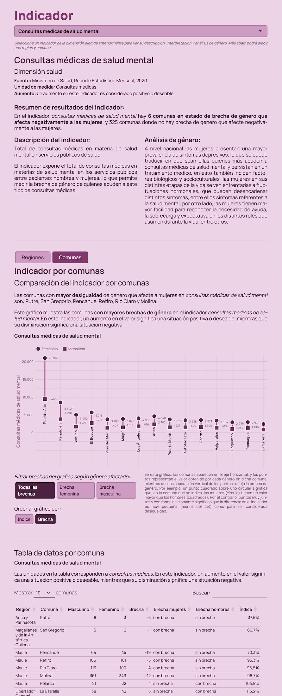
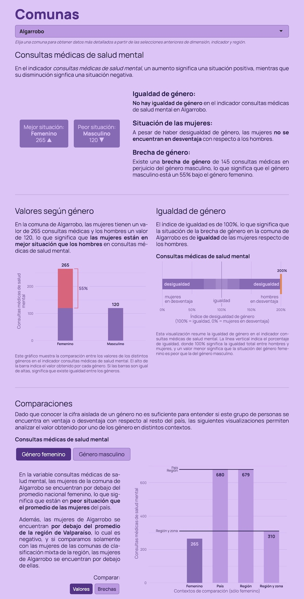
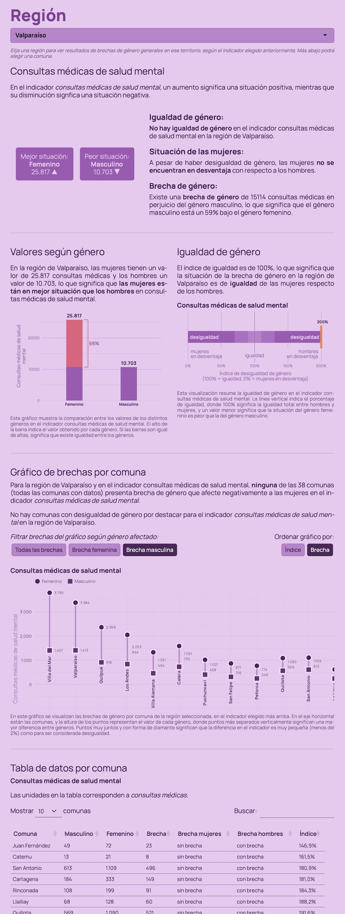

Plataforma de análisis: Índice de Brechas de Género
Análisis de brechas de género a nivel comunal y regional
26/3/2026
El Índice de Brechas de Género es un nuevo instrumento estadístico desarrollado por la Subsecretaría de Desarrollo Regional y Administrativo (Subdere), diseñado para medir brechas de género a nivel comunal y regional en el país. El IBG se basa en 52 indicadores de nivel comunal y regional, que abarcan las dimensiones de cultura, educación, salud, laboral, participación y social.

Para producir este instrumento se realizaron búsquedas exhaustivas de datos sociales de nivel comunal que cuenten con desagregación de género, incluyendo múltiples solicitudes de datos por ley de transparencia a servicios públicos. Así, el Departamento de Estudios y Análisis Territorial de Subdere ha desarrollado una plataforma de visualización de datos única en la cantidad de información con perspectiva de género disponible, además complementada con interpretaciones teóricas y conceptuales de cada indicador.
El instrumento además se caracteriza por presentar brechas de género que afectan negativamente tanto a mujeres como a hombres, presentando una visión compleja de las desigualdades e inequidades de género que considera los efectos nocivos de los sesgos, estereotipos y discriminaciones de género sobre toda la población. Esto permite presentar indicadores donde, por ejemplo, las mujeres aparentemente se ven beneficiadas por sobre los hombres, pero que al analizarse esconden sesgos, estereotipos o discriminaciones que las afectan en otras dimensiones de la complejidad social.
La lógica de presentación de los resultados va desde una exploración desde lo general a lo particular: las y los usuarios empiezan eligiendo el aspecto más general del estudio, la dimensión, para luego elegir un indicador de la dimensión elegida y recibir resultados generales, con la posibilidad de continuar bajando por la plataforma para indagar en resultados regionales y finalmente comunales. De este modo, la plataforma entrega un análisis de brechas de género en múltiples niveles de detalle.
Desarrollo del estudio

Todos los datos del estudio fueron procesados en R, y la plataforma interactiva también fue desarrollada en R.
Al igual que con el Estudio de Brechas Comunales, desarrollar este proyecto en R permitió integrar altamente la obtención y el análisis de los datos con la presentación de resultados, significando un proceso de desarrollo paralelo y de mucha iteración dentro del equipo, cosa que no habría sido posible con equipos externos. En este sentido, también significa una optimización del gasto público, al no necesitar licitar el desarrollo de la plataforma a una empresa externa.
Procesamiento de datos
Luego de catastrar la disponibilidad de datos sociales de nivel comunal y con desagregación por sexo o género, los datos fueron guardados por fuente y procesados con el lenguaje de programación estadística R.

Cada fuente de datos cuenta con un script que limpia los datos y transforma su estructura a una en común, con columnas para los géneros masculino y femenino. Posteriormente, el script procesar.R carga todos los resultados de las fuentes limpias, aplica tests unitarios para validar la calidad de la información, unifica los datos de distintas fuentes en una sola base de datos, y consulta planillas compartidas de Google Sheets para complementar los datos con metadatos clave para la plataforma de visualización, así como interpretaciones teóricas y conceptuales para cada indicador.
La base de datos resultante está diseñada para contener toda la metadata necesaria para que la plataforma interactiva muestre las interpretaciones correctas de los datos, así como que las visualizaciones puedan ajustarse a las particularidades de cada indicador.
Desarrollo de la plataforma
El estudio se centra en su presentación por medio de la plataforma interactiva, siendo su informe de resultados un complemento de la plataforma y no el producto central.
La plataforma fue desarrollada en R y Shiny, y presenta una serie de visualizaciones interactivas que permiten explorar los resultados del estudio.